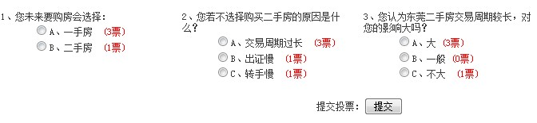
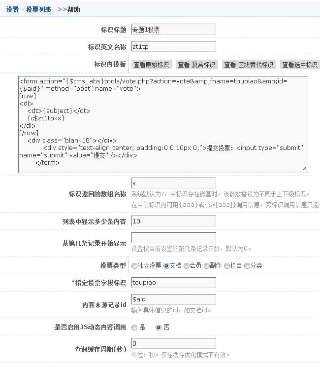

效果:

标识模板(template)代码:
<form action="{$cms_abs}tools/vote.php?action=vote&amp;fname=toupiao&amp;id={$aid}" method="post" name="vote">
[row]
<dl>
<dt>{subject}</dt>
{c$zt1tpxx}
</dl>
[/row]
<div class="blank10"></div>
<div style="text-align:center; padding:0 0 10px 0;">提交投票：<input type="submit" name="submit"
value="提交" /></div>
</form>
说明：
1. 用于显示某具体投票的内容，可指定ID，也可继承来自投票页面或投票列表的激活ID。
2. 本标识属列表性质标识，请参照相关列表标识说明。
3. 可内嵌通用原始标识、投票相关的原始标识及相应的字段标识。
4. 表单action="{$cms_abs}tools/vote.php?action=vote&fname=投票字段标识&id=xx",xx为选择的投票类型ID
5. 本标识不展示具体投票选项的信息，如需要详细民展示，需要内嵌投票模块标识。
6. {c$zt1tpxx}是投票选项列表标识，详细可以见投票选项列表
整体截图如下
